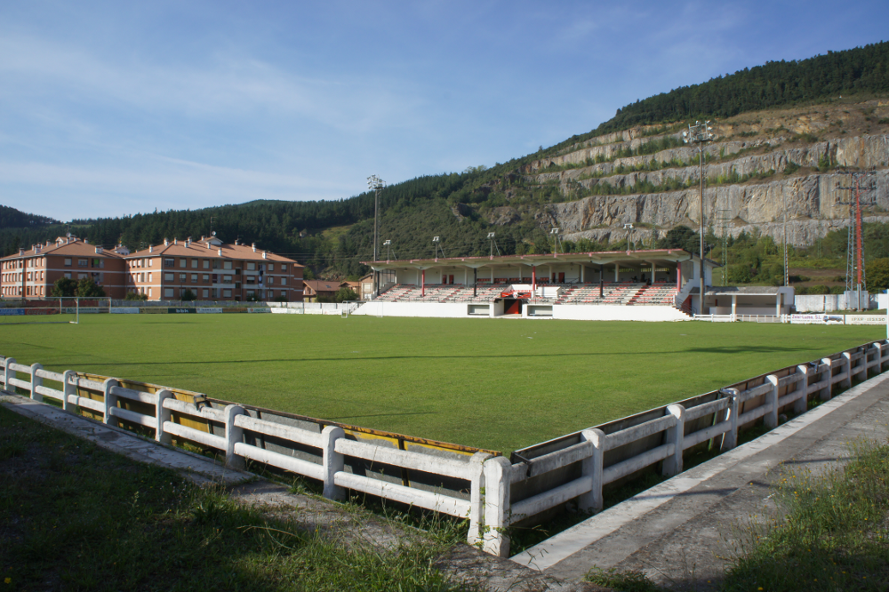

INSTALAZIOAK
Arlonagusiako Futbol Zelaia:
Neurriak: 103 x 63 m.
Edukiera: 700 ikusle
Belar naturala
Argiztapen artifiziala
Tribuna estalia

Arlonagusiako Futbol Zelaian benjamin, alebin eta infantilen taldeak entrenatu eta partidu ofizialak jokatuko dabe.
Lemoako Udal Polikiroldegia:
Areto-futboleko kantxa


Lemoako Udal Polikiroldegian, futbol eskolako taldeek entrenatuko dabe.